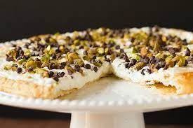

Cannoli Pizza

Ingredients
- 1 puff pastry nutella
- 8 oz cream cheese softened
- 15 oz ricotta cheese
- 2 cups powdered sugar
- 2 tsp vanilla extract
- mini chocolate chips
- crushed pistachios
- chopped fruits sprinkles
Procedure
-
STEP 1
Roll out puff pastry sheet and trim edges to make a circle to fit on the pizza pan. Place on pizza pan and poke with a fork all over. Bake in a preheated oven at 400° for 10-15 minutes until puffed and golden. Let cool. While the pastry cooks and cools, beat together cream cheese, ricotta, powdered sugar, and vanilla until creamy and lump free. Place in a piping bag. Spread nutella gently all over the cooled pastry. Pipe canoli filling all over pizza in any "design" you desire. Top with desired toppings: mini chocolate chips, chopped strawberries, crushed pistachios, sprinkles.